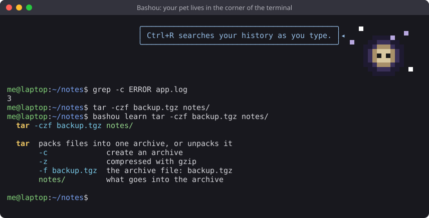

English · Français
Bashou est un moyen gratuit et open source d'apprendre la ligne de commande Linux et les scripts bash, pour
les débutants et au-delà. C'est un compagnon de terminal : un petit animal en pixel art vit dans le coin de ton
terminal et grandit quand tu utilises de vraies commandes, te donne des astuces et t'explique ce que fait chaque
commande. Il marche hors ligne, sans compte et sans IA. Le jeu est en français : bashou config language fr.
Code source et guide : github.com/IAmAStealer/Bashou (licence MIT).

grep, find, les pipes, awk et sed,
les permissions, les processus, les disques, les archives, les paquets avec apt et dnf, les services systemd.$( ), les boucles, set -euo pipefail.bashou learn <commande> démonte n'importe quelle commande et explique chaque option.bashou spot, pour reconnaître d'un coup d'œil une adresse IPv6, un hachage ou du base64.
sudo install -dm755 /etc/apt/keyrings sudo curl -fsSLo /etc/apt/keyrings/bashou.asc https://iamastealer.github.io/Bashou/bashou.asc printf '%s\n' 'Types: deb' 'URIs: https://iamastealer.github.io/Bashou/deb/' 'Suites: ./' \ 'Signed-By: /etc/apt/keyrings/bashou.asc' | sudo tee /etc/apt/sources.list.d/bashou.sources sudo apt update && sudo apt install bashou
sudo curl -fsSLo /etc/yum.repos.d/bashou.repo https://iamastealer.github.io/Bashou/bashou.repo sudo dnf install bashou
Ton compagnon est là. S'il n'y est pas (sur Debian et Ubuntu, certains terminaux ne lisent pas les réglages du système), lance :
bashou on
Ça ajoute une ligne à ton ~/.bashrc, et bashou off cache le compagnon. Les mises à jour
arrivent avec le reste du système (apt upgrade, dnf upgrade). Les paquets et les données des dépôts
sont signés avec la clé de Bashou : apt et dnf refusent tout le reste. Un autre Linux :
installe avec git, voir le README.
Bashou ne collecte rien : pas de compte, pas de télémétrie, pas de pub. Il compte les outils que tu utilises, garde ces compteurs dans ton dossier personnel et ne les envoie jamais nulle part.